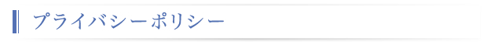

和心システム株式会社は、質の高いIT技術をベースに顧客の満足と信頼を得るため、個人情報の保護についての重要性を認識し、継続的な保護に取り組むことが企業の重要課題と考えており、以下の通り個人情報保護の徹底に努めます。
個人情報保護方針
1.会社概要
当社は創業以来、社会や企業のニーズにこたえるため、新しいテクノロジーを積極的に取り入れ、主に金融系基幹業務システムの設計開発業務、保守業務、エンベデット系ソフトの設計開発業務、Ｗｅｂシステムの開発、保守、運用業務を実施しています。
2.基本方針
個人情報は個人の重要な財産である。
当社で業務に従事する全ての従業員は、個人情報に関する個人情報保護マネジメントシステムを遵守し、個人情報を正確かつ安全に取扱うことにより、お客様・従業員・ビジネスパートナーの情報を守り、又苦情などにも真摯に耳を傾け、その信頼に応えます。
3.個人情報に関する個人情報保護マネジメントシステムの目的
（１） 適切な個人情報の取得、利用及び提供（目的外利用を行わないことを含む）の基準及びこれを
運用する規定とします。
（２） 個人情報への不正アクセス、個人情報の紛失、破壊、改ざん及び漏洩等の予防並びに是正に関する
具体的なルールを定めます。
（３） 個人情報の目的外利用を行わないよう、従業員、関係者へ教育、または契約にて遵守させるようにいたし
ます。また万が一、目的外利用する必要が生じた場合には、「個人情報の保護に関する法律」および関
連するその他の法令により例外として取り扱うことが認められている場合を除き、その利用について本人
の同意を得るものとします。
4.組織活動
（１） 代表取締役、役員及び従業員、嘱託は、個人情報に関する法令、国が定める指針その他の規範を遵守し
ます。
個人情報の取扱いに関して、個人情報の保護に関する法令、国が定める指針その他の規範を遵守する
とともに、個人情報を誠実に取り扱います。また、当社の策定する個人情報保護マネジメントシステム
をこれらの法令、国が定める指針その他の規範に適合させていきます。
（２） 個人情報保護管理者（CP管理者）を選任し、個人情報保護マネジメントシステムの実施及び運用に
関する責任及び権限を与え、適正に運用いたします。
（３） 取引のある企業及び個人に対し、規定の目的を達成するための協力を要請します。
（４） 個人情報保護方針 および お客様の個人情報の取扱については、当社のインターネット・
ホームページや事務所案内等に掲示すること等により、いつでも閲覧可能な状態とします。
（５） 個人情報保護マネジメントシステムは継続的に改善します。
2007年2月1日 制定
2007年8月1日 改訂
2011年1月15日 改訂
2014年12月22日 改訂
代表取締役 飯干徳勝
苦情及び相談窓口： 総務部 TEL：0120-02-7055 MAIL：info@washin.co.jp